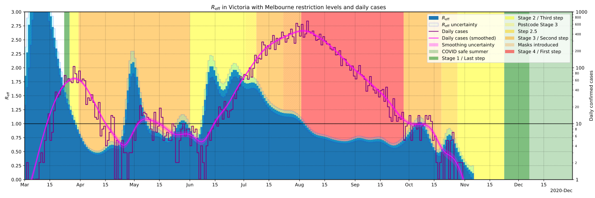

Last updated: 2020-08-14-01:13 UTC
Updates daily at 11AM AEST
Victoria's road to elimination
←Back to per-country plots
Victoria is in a fairly strict lockdown, and is going for elimination of the virus.
If they succeed, it could mean Australia will be COVID free.
How have Victoria's restrictions affected the spread of the virus? Can we expect the
virus to be eliminated in Victoria? If so, when? The below plot shows how the
effective reproduction number of the virus, Reff has changed over
time in Victoria, as well as how the daily cases have changed over time, with a
projection based on the current estimate of Reff. The daily case
numbers have been smoothed to better show the trend instead of daily random
fluctuations. See below for details.

Caveats and explanations
-
Daily case numbers have been smoothed with 4-day Gaussian smoothing:
Nsmoothed(t) = N(t) ∗
(2πTs2)-1/2 exp(-t2 /
2Ts2)
where Ts = 4 days
and ∗ is the convolution operation.
-
Before smoothing, the daily case numbers are padded on the right with an
extrapolation based on a linear fit to the most recent 7 days of data. This is
necessary to prevent the smoothing dragging the data for recent days toward zero.
The padding and smoothing is then done twice more using the upper and lower
uncertainty limits of the linear fit, and this is treated as uncertainty in the
smoothed data (visible in the plot as an uncertainty range for daily cases and
Reff over the last week or so)
-
Reff is then calculated for each day as:
Reff(ti) = (Nsmoothed(ti) / Nsmoothed(ti-1))Tg
where Tg = 5 days is the approximate generation time of the virus.
-
The extrapolation of daily case numbers is based on exponential growth/decay using the most recent value of Reff:
Nextrap(ti) = Nsmoothed(ttoday) Reff(ttoday)
(ti - ttoday)/Tg
and similarly for the upper and lower uncertainty limits of Nsmoothed(ttoday) and Reff(ttoday) for the uncertainty range of the projection.
Source for case numbers: covidlive.com.au
Plot/analysis by Chris Billington. Contact: chrisjbillington@gmail.com
Python script for producing the plot can be found at https://github.com/chrisjbillington/chrisjbillington.github.io/blob/master/victoria.py.